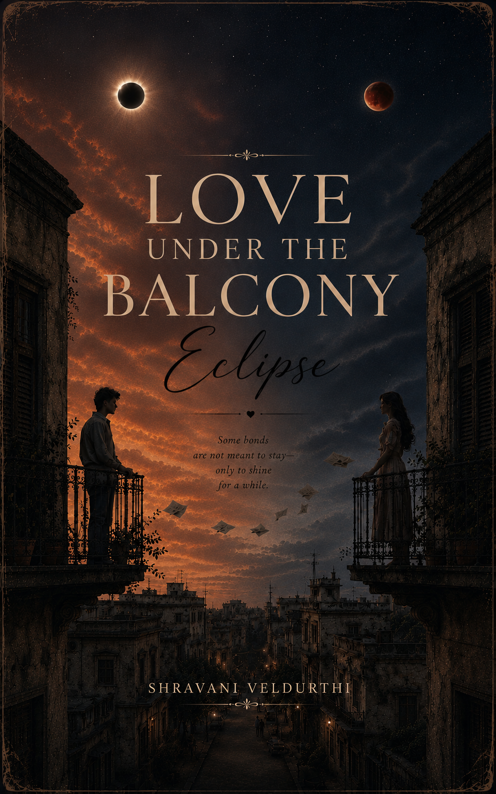
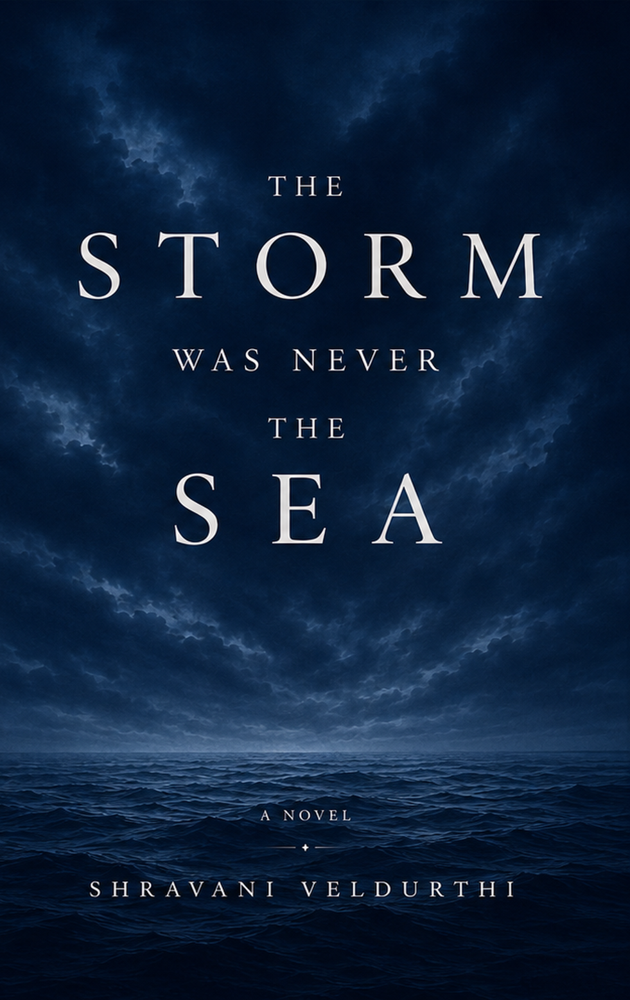

A little shelf of feelings
Stories to keep
close.
From quiet romance to the tender ache of young love, every book is a small invitation to feel something honestly.

Published poetry collection · Available now
Love Laments
“Love Lament” is a heartfelt journey through 21 days of love, longing, and heartbreak. Each poem captures a quiet moment, soft butterflies, unspoken hopes, and the slow ache of letting go.
Written with raw emotion and simple honesty, this collection reflects the beauty and pain of young love. Every page holds a feeling many are afraid to express but everyone has experienced — a short, soulful diary of love turning into lessons.
Read / buy the ebook ↗
Available now · Set in 1996
Love Under The Balcony Eclipse
When two strangers living across from each other begin noticing the same silent balcony every day, an unexpected connection slowly takes shape.
Without grand gestures or rushed moments, their lives begin to change in ways neither of them ever imagined.
A story about silence, longing, hope, and the extraordinary beauty hidden within ordinary moments, Love Under The Balcony Eclipse reminds us that some of the deepest love stories are written not in words—but in the spaces between them.
Read / buy on Pothi ↗
New release · Available now
The Storm Was Never In The Sea
Some stories are not written in words, but in the silence between them.
Set beside the endless waves of the sea, this novel explores the emotions people carry quietly—the memories that stay, the wounds that remain unseen, and the search for a place where the heart finally feels at home.
Through moments of loneliness, unexpected connections, and the gentle passage of time, this story unfolds a journey of discovering strength within vulnerability. It reflects on the pain of feeling unseen, the warmth of human bonds, and the hope that survives even after the darkest storms.
A deeply emotional tale about belonging, healing, and the quiet courage it takes to continue moving forward.
Because every heart carries a story, and every story deserves to be heard.
Read / buy on Pothi ↗